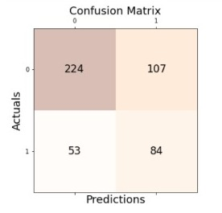

Gaussian Naive Bayes Algorithm
Gaussian Naive Bayes Algorithm is used when we are dealing with continuous data and uses Gaussian distribution.Using this supervised algorithm for our dataset, we have derived the confusion matrix that determines the performance of the model
